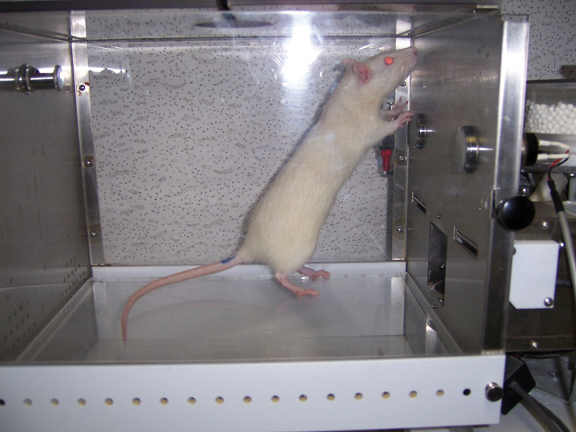
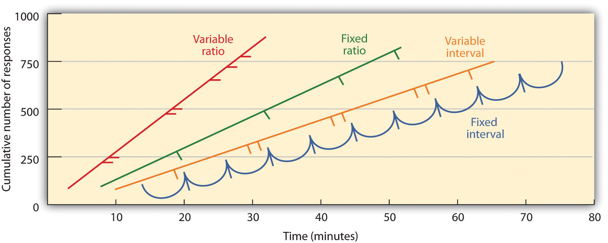

In classical conditioning the organism learns to associate new stimuli with natural, biological responses such as salivation or fear. The organism does not learn something new but rather begins to perform in an existing behavior in the presence of a new signal. Operant conditioningLearning that occurs based on the consequences of behavior., on the other hand, is learning that occurs based on the consequences of behavior and can involve the learning of new actions. Operant conditioning occurs when a dog rolls over on command because it has been praised for doing so in the past, when a schoolroom bully threatens his classmates because doing so allows him to get his way, and when a child gets good grades because her parents threaten to punish her if she doesn’t. In operant conditioning the organism learns from the consequences of its own actions.
Psychologist Edward L. Thorndike (1874–1949) was the first scientist to systematically study operant conditioning. In his research Thorndike (1898)Thorndike, E. L. (1898). Animal intelligence: An experimental study of the associative processes in animals. Washington, DC: American Psychological Association. observed cats who had been placed in a “puzzle box” from which they tried to escape (Note 7.21 "Video Clip: Thorndike’s Puzzle Box"). At first the cats scratched, bit, and swatted haphazardly, without any idea of how to get out. But eventually, and accidentally, they pressed the lever that opened the door and exited to their prize, a scrap of fish. The next time the cat was constrained within the box it attempted fewer of the ineffective responses before carrying out the successful escape, and after several trials the cat learned to almost immediately make the correct response.
Observing these changes in the cats’ behavior led Thorndike to develop his law of effectThe principle that responses that create a typically pleasant outcome in a particular situation are more likely to occur again in a similar situation, whereas responses that produce a typically unpleasant outcome are less likely to occur again in the situation., the principle that responses that create a typically pleasant outcome in a particular situation are more likely to occur again in a similar situation, whereas responses that produce a typically unpleasant outcome are less likely to occur again in the situation (Thorndike, 1911).Thorndike, E. L. (1911). Animal intelligence: Experimental studies. New York, NY: Macmillan. Retrieved from http://www.archive.org/details/animalintelligen00thor The essence of the law of effect is that successful responses, because they are pleasurable, are “stamped in” by experience and thus occur more frequently. Unsuccessful responses, which produce unpleasant experiences, are “stamped out” and subsequently occur less frequently.
When Thorndike placed his cats in a puzzle box, he found that they learned to engage in the important escape behavior faster after each trial. Thorndike described the learning that follows reinforcement in terms of the law of effect.
The influential behavioral psychologist B. F. Skinner (1904–1990) expanded on Thorndike’s ideas to develop a more complete set of principles to explain operant conditioning. Skinner created specially designed environments known as operant chambers (usually called Skinner boxes) to systemically study learning. A Skinner box (operant chamber)A structure used to study operant learning in small animals. is a structure that is big enough to fit a rodent or bird and that contains a bar or key that the organism can press or peck to release food or water. It also contains a device to record the animal’s responses.
The most basic of Skinner’s experiments was quite similar to Thorndike’s research with cats. A rat placed in the chamber reacted as one might expect, scurrying about the box and sniffing and clawing at the floor and walls. Eventually the rat chanced upon a lever, which it pressed to release pellets of food. The next time around, the rat took a little less time to press the lever, and on successive trials, the time it took to press the lever became shorter and shorter. Soon the rat was pressing the lever as fast as it could eat the food that appeared. As predicted by the law of effect, the rat had learned to repeat the action that brought about the food and cease the actions that did not.
Skinner studied, in detail, how animals changed their behavior through reinforcement and punishment, and he developed terms that explained the processes of operant learning (Table 7.1 "How Positive and Negative Reinforcement and Punishment Influence Behavior"). Skinner used the term reinforcerAny event that strengthens or increases the likelihood of a behavior. to refer to any event that strengthens or increases the likelihood of a behavior and the term punisherAny event that weakens or decreases the likelihood of a behavior. to refer to any event that weakens or decreases the likelihood of a behavior. And he used the terms positive and negative to refer to whether a reinforcement was presented or removed, respectively. Thus positive reinforcementThe strengthening of a response by presenting a typically pleasurable stimulus after the response. strengthens a response by presenting something pleasant after the response and negative reinforcementThe strengthening of a response by removing a typically unpleasant stimulus after the response. strengthens a response by reducing or removing something unpleasant. For example, giving a child praise for completing his homework represents positive reinforcement, whereas taking aspirin to reduced the pain of a headache represents negative reinforcement. In both cases, the reinforcement makes it more likely that behavior will occur again in the future.
Figure 7.6 Rat in a Skinner Box
B. F. Skinner used a Skinner box to study operant learning. The box contains a bar or key that the organism can press to receive food and water, and a device that records the organism’s responses.
Source: Photo courtesy of YrVelouria, http://www.flickr.com/photos/yrvelouria/277353660/in/photostream.
Table 7.1 How Positive and Negative Reinforcement and Punishment Influence Behavior
| Operant conditioning term | Description | Outcome | Example |
|---|---|---|---|
| Positive reinforcement | Add or increase a pleasant stimulus | Behavior is strengthened | Giving a student a prize after he gets an A on a test |
| Negative reinforcement | Reduce or remove an unpleasant stimulus | Behavior is strengthened | Taking painkillers that eliminate pain increases the likelihood that you will take painkillers again |
| Positive punishment | Present or add an unpleasant stimulus | Behavior is weakened | Giving a student extra homework after she misbehaves in class |
| Negative punishment | Reduce or remove a pleasant stimulus | Behavior is weakened | Taking away a teen’s computer after he misses curfew |
Reinforcement, either positive or negative, works by increasing the likelihood of a behavior. Punishment, on the other hand, refers to any event that weakens or reduces the likelihood of a behavior. Positive punishmentThe weakening of a response by presenting a typically unpleasant stimulus after the response. weakens a response by presenting something unpleasant after the response, whereas negative punishmentThe weakening of a response by removing a typically pleasant stimulus after the response. weakens a response by reducing or removing something pleasant. A child who is grounded after fighting with a sibling (positive punishment) or who loses out on the opportunity to go to recess after getting a poor grade (negative punishment) is less likely to repeat these behaviors.
Although the distinction between reinforcement (which increases behavior) and punishment (which decreases it) is usually clear, in some cases it is difficult to determine whether a reinforcer is positive or negative. On a hot day a cool breeze could be seen as a positive reinforcer (because it brings in cool air) or a negative reinforcer (because it removes hot air). In other cases, reinforcement can be both positive and negative. One may smoke a cigarette both because it brings pleasure (positive reinforcement) and because it eliminates the craving for nicotine (negative reinforcement).
It is also important to note that reinforcement and punishment are not simply opposites. The use of positive reinforcement in changing behavior is almost always more effective than using punishment. This is because positive reinforcement makes the person or animal feel better, helping create a positive relationship with the person providing the reinforcement. Types of positive reinforcement that are effective in everyday life include verbal praise or approval, the awarding of status or prestige, and direct financial payment. Punishment, on the other hand, is more likely to create only temporary changes in behavior because it is based on coercion and typically creates a negative and adversarial relationship with the person providing the reinforcement. When the person who provides the punishment leaves the situation, the unwanted behavior is likely to return.
Perhaps you remember watching a movie or being at a show in which an animal—maybe a dog, a horse, or a dolphin—did some pretty amazing things. The trainer gave a command and the dolphin swam to the bottom of the pool, picked up a ring on its nose, jumped out of the water through a hoop in the air, dived again to the bottom of the pool, picked up another ring, and then took both of the rings to the trainer at the edge of the pool. The animal was trained to do the trick, and the principles of operant conditioning were used to train it. But these complex behaviors are a far cry from the simple stimulus-response relationships that we have considered thus far. How can reinforcement be used to create complex behaviors such as these?
One way to expand the use of operant learning is to modify the schedule on which the reinforcement is applied. To this point we have only discussed a continuous reinforcement scheduleA reinforcement schedule in which the desired response is reinforced every time it occurs., in which the desired response is reinforced every time it occurs; whenever the dog rolls over, for instance, it gets a biscuit. Continuous reinforcement results in relatively fast learning but also rapid extinction of the desired behavior once the reinforcer disappears. The problem is that because the organism is used to receiving the reinforcement after every behavior, the responder may give up quickly when it doesn’t appear.
Most real-world reinforcers are not continuous; they occur on a partial (or intermittent) reinforcement scheduleA reinforcement schedule in which the desired reponse is sometimes reinforced, and sometimes not.—a schedule in which the responses are sometimes reinforced, and sometimes not. In comparison to continuous reinforcement, partial reinforcement schedules lead to slower initial learning, but they also lead to greater resistance to extinction. Because the reinforcement does not appear after every behavior, it takes longer for the learner to determine that the reward is no longer coming, and thus extinction is slower. The four types of partial reinforcement schedules are summarized in Table 7.2 "Reinforcement Schedules".
Table 7.2 Reinforcement Schedules
| Reinforcement schedule | Explanation | Real-world example |
|---|---|---|
| Fixed-ratio | Behavior is reinforced after a specific number of responses | Factory workers who are paid according to the number of products they produce |
| Variable-ratio | Behavior is reinforced after an average, but unpredictable, number of responses | Payoffs from slot machines and other games of chance |
| Fixed-interval | Behavior is reinforced for the first response after a specific amount of time has passed | People who earn a monthly salary |
| Variable-interval | Behavior is reinforced for the first response after an average, but unpredictable, amount of time has passed | Person who checks voice mail for messages |
Partial reinforcement schedules are determined by whether the reinforcement is presented on the basis of the time that elapses between reinforcement (interval) or on the basis of the number of responses that the organism engages in (ratio), and by whether the reinforcement occurs on a regular (fixed) or unpredictable (variable) schedule. In a fixed-interval scheduleA reinforcement schedule in which the reinforcement occurs for the first response made after a specific amount of time has passed., reinforcement occurs for the first response made after a specific amount of time has passed. For instance, on a one-minute fixed-interval schedule the animal receives a reinforcement every minute, assuming it engages in the behavior at least once during the minute. As you can see in Figure 7.7 "Examples of Response Patterns by Animals Trained Under Different Partial Reinforcement Schedules", animals under fixed-interval schedules tend to slow down their responding immediately after the reinforcement but then increase the behavior again as the time of the next reinforcement gets closer. (Most students study for exams the same way.) In a variable-interval scheduleAn interval reinforcement schedule in which the timing of the reinforcer is varied around the average interval, making the actual appearance of the reinforcer unpredictable., the reinforcers appear on an interval schedule, but the timing is varied around the average interval, making the actual appearance of the reinforcer unpredictable. An example might be checking your e-mail: You are reinforced by receiving messages that come, on average, say every 30 minutes, but the reinforcement occurs only at random times. Interval reinforcement schedules tend to produce slow and steady rates of responding.
Figure 7.7 Examples of Response Patterns by Animals Trained Under Different Partial Reinforcement Schedules
Schedules based on the number of responses (ratio types) induce greater response rate than do schedules based on elapsed time (interval types). Also, unpredictable schedules (variable types) produce stronger responses than do predictable schedules (fixed types).
Source: Adapted from Kassin, S. (2003). Essentials of psychology. Upper Saddle River, NJ: Prentice Hall. Retrieved from Essentials of Psychology Prentice Hall Companion Website: http://wps.prenhall.com/hss_kassin_essentials_1/15/3933/1006917.cw/index.html.
In a fixed-ratio scheduleA reinforcement schedule in which behavior is reinforced after a specific number of responses., a behavior is reinforced after a specific number of responses. For instance, a rat’s behavior may be reinforced after it has pressed a key 20 times, or a salesperson may receive a bonus after she has sold 10 products. As you can see in Figure 7.7 "Examples of Response Patterns by Animals Trained Under Different Partial Reinforcement Schedules", once the organism has learned to act in accordance with the fixed-reinforcement schedule, it will pause only briefly when reinforcement occurs before returning to a high level of responsiveness. A variable-ratio scheduleA ratio reinforcement schedule in which the reinforcer is provided after an average number of responses. provides reinforcers after a specific but average number of responses. Winning money from slot machines or on a lottery ticket are examples of reinforcement that occur on a variable-ratio schedule. For instance, a slot machine may be programmed to provide a win every 20 times the user pulls the handle, on average. As you can see in Figure 7.8 "Slot Machine", ratio schedules tend to produce high rates of responding because reinforcement increases as the number of responses increase.
Complex behaviors are also created through shapingThe process of guiding an organism’s behavior to the desired outcome through the use of successive approximation to a final desired behavior., the process of guiding an organism’s behavior to the desired outcome through the use of successive approximation to a final desired behavior. Skinner made extensive use of this procedure in his boxes. For instance, he could train a rat to press a bar two times to receive food, by first providing food when the animal moved near the bar. Then when that behavior had been learned he would begin to provide food only when the rat touched the bar. Further shaping limited the reinforcement to only when the rat pressed the bar, to when it pressed the bar and touched it a second time, and finally, to only when it pressed the bar twice. Although it can take a long time, in this way operant conditioning can create chains of behaviors that are reinforced only when they are completed.
Reinforcing animals if they correctly discriminate between similar stimuli allows scientists to test the animals’ ability to learn, and the discriminations that they can make are sometimes quite remarkable. Pigeons have been trained to distinguish between images of Charlie Brown and the other Peanuts characters (Cerella, 1980),Cerella, J. (1980). The pigeon’s analysis of pictures. Pattern Recognition, 12, 1–6. and between different styles of music and art (Porter & Neuringer, 1984; Watanabe, Sakamoto & Wakita, 1995).Porter, D., & Neuringer, A. (1984). Music discriminations by pigeons. Journal of Experimental Psychology: Animal Behavior Processes, 10(2), 138–148; Watanabe, S., Sakamoto, J., & Wakita, M. (1995). Pigeons’ discrimination of painting by Monet and Picasso. Journal of the Experimental Analysis of Behavior, 63(2), 165–174.
Behaviors can also be trained through the use of secondary reinforcers. Whereas a primary reinforcerStimuli that are naturally preferred or enjoyed by the organism, such as food, water, and relief from pain. includes stimuli that are naturally preferred or enjoyed by the organism, such as food, water, and relief from pain, a secondary reinforcerNeutral events that have become associated with a primary reinforcer through classical conditioning. (sometimes called conditioned reinforcer) is a neutral event that has become associated with a primary reinforcer through classical conditioning. An example of a secondary reinforcer would be the whistle given by an animal trainer, which has been associated over time with the primary reinforcer, food. An example of an everyday secondary reinforcer is money. We enjoy having money, not so much for the stimulus itself, but rather for the primary reinforcers (the things that money can buy) with which it is associated.
Watch the following two videos from current television shows. Can you determine which learning procedures are being demonstrated?